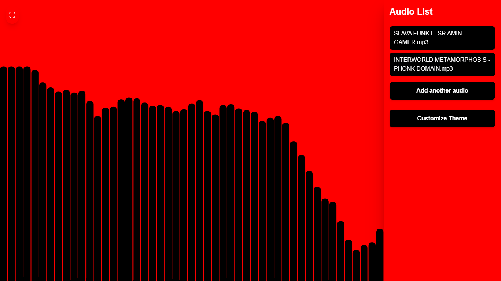
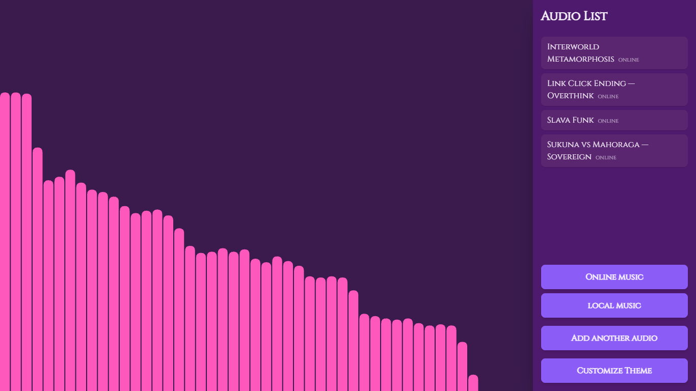
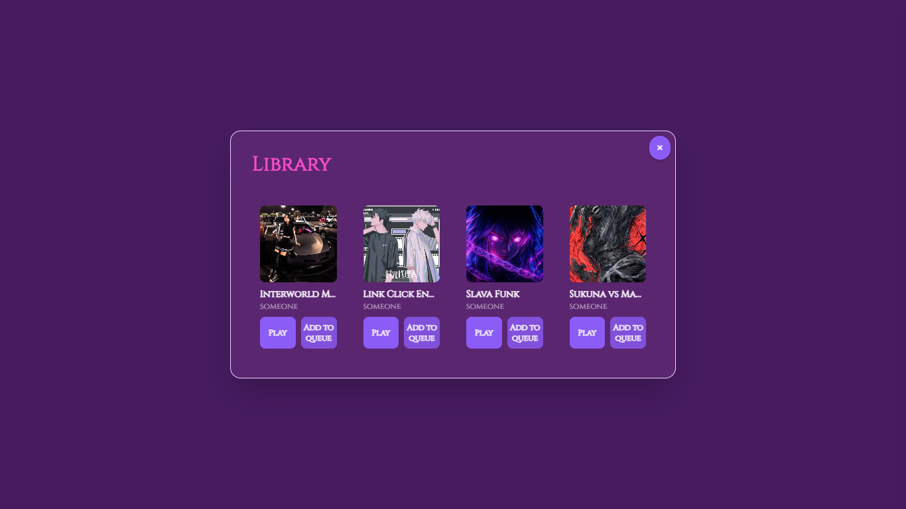
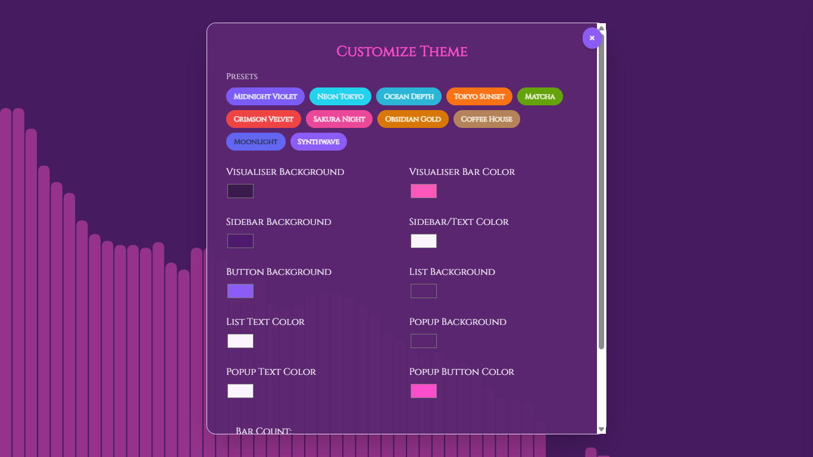

Featured Project · 04
Audio Visualiser
A browser-based app that turns any song into real-time animated bars, with an interface built around customizable themes, offline playback, and a distraction-free listening view.

The idea
Most audio players hide the sound behind a plain progress bar. This project puts the sound itself on screen — every beat becomes a moving bar, rendered live as the track plays, with a theme system so the visuals can match the mood of the music.
What I built
- A canvas-based visualiser powered by the Web Audio API's analyser node, drawing smooth animated bars in sync with the audio frequency data.
- Local audio uploads saved to the browser with IndexedDB, so tracks persist and play back offline without a server.
- An online library pulled from a CDN manifest, letting users browse and queue hosted tracks alongside their own uploads.
- A full theme customiser with live color presets, saved to local storage so preferences carry over between sessions.
- A Redux-driven playlist system — queue, auto-advance, and switch between local and online sources seamlessly.
Interaction flow
Audio Input→Analyser Node→Canvas Visualiser→Themed UI
Visuals to add


